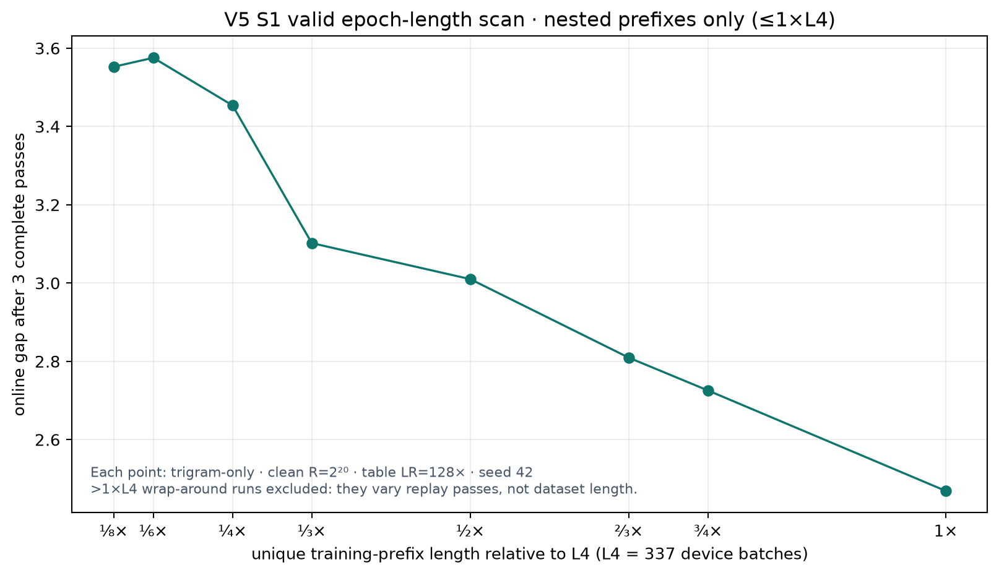
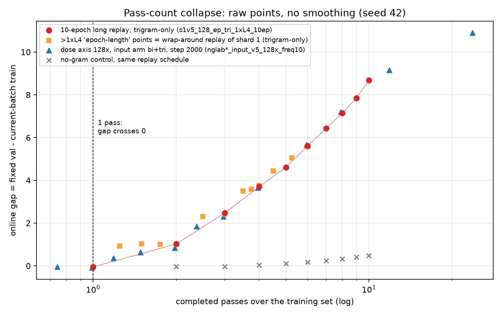
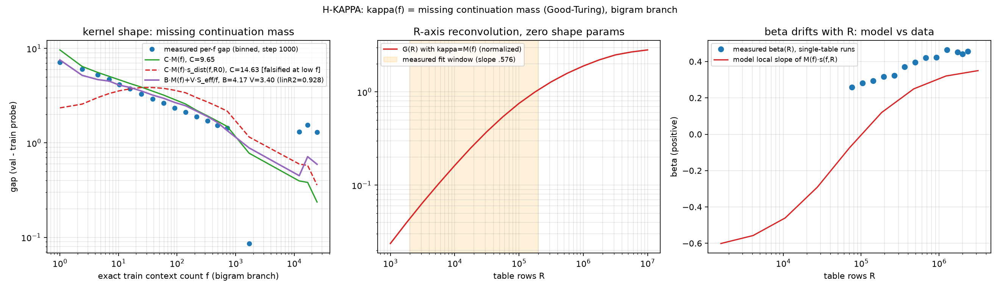

n-gram gap 的机制：注入、频率、表大小、epoch 与干预
本页是唯一权威主文档（blog 发布版；本地只读副本在仓库 docs/report/index.html）。全部结果使用 v5 极简标准与统一口径：gap = fixed-val − current-batch online train loss，run 级溯源见 实验登记表。
0 · 标准与测量
代码：训练与注入 code/train.py（n-gram 注入公式 x = wte(idx) + Σ_n ngram_ve[idx_n]，clean 单表 nn.Embedding(R, n_embd)，单一 hash，R = distinct+1 零碰撞）；频率索引 code/ngram_freq.py；launcher code/cluster/run_v5_clean.sh（128× 标准已写死）。口径细节：online train loss 在参数更新前记录，fixed-val 在同 step 更新后；novel（hit=0）无 train loss、不定义 gap；历史 2× 时代数据与 4-layer/2-hash 框架均已退役，仅存档。
每一张图的 run_id / step / seed 都登记在 experiment-registry.html；数值断言台账在 docs/claims-ledger.md。旧版主文档（2× 时代，2026-08-06）已快照至 versions/。
1 · 主要现象：加 n-gram 就有 gap
同一条训练流、同一套评测下，四个注入臂只有带 n-gram 注入的臂产生持续增长的 val−train gap：input / y / v 三臂 gap 随 step 单调增长，nogram 对照贴零。这条现象在 2× 与 128× 两代表 LR 下都成立；128× 下 gap 水平整体抬升（input 主线 @2000 = 5.21，旧 2× 标准 1.87），种子 43/44 复现 5.42 / 5.53，结论稳健。

nglab{input,y,v,nogram}_input_v5_{2x,128x}_fixed（run_v5_clean.sh，seed 42，2000 步，val/freq=10）。
2 · gap–频率关系：低频 context 贡献主要 gap
把每个 eval step 的 train/val loss 按 context 的 exact train hit-count f 分桶：per-bin gap 随 f 幂律衰减——低频 context 贡献了大部分 gap。两条独立的测量互相印证：主 run 的 online coarse bins（step-1000 局部斜率 bigram ≈ −0.21 / trigram ≈ −0.44）与固定 train 探针的 exact-f 拟合（bigram −0.253 / trigram −0.318，窗口 [4,4096]，token-mass 加权）。两个口径都不是 1/f；β 不是普适常数（随 R 与口径漂移，见 §6），只作现象描述使用。


频率轴与干预直接相连：把 f≤8 的 n-gram 贡献在 epoch 边界后动态屏蔽，net gap 掉到 0.765（对照 2.724）——少量低频 context 承载了 ~72% 的 gap（见 §5 图 11）。
3 · gap–表大小关系：幂律
单支路变 R（另一支路固定 2²⁰，两者都开启），gap 在 R∈[2¹⁶, 2²²] 窗口内呈干净幂律：bigram γ ≈ 0.576、trigram γ ≈ 0.665。表更小 ⇒ 每个 context 的可用行更少 ⇒ 单位记忆的读出通道被压制（机制见 §6 的 a(K/R)）。窗口外（R≲2¹⁴ 或 ≳2²³）偏离线性：小 R 端被噪声与本底主导，大 R 端大量行几乎为空。

s1v5_128_tbl_bi2_R{R}_fixed），红 = 只变 trigram 表（s1v5_128_tbl_tri2_R{R}_fixed）；另一支路固定 2²⁰ 但两个表都开启。窗口斜率：bigram 0.576 / trigram 0.665。术语：K = 训练前缀中 distinct contexts 数；R = 每 branch 物理行数；K/R 是负载比而非 collision rate；实测 collision = (K − occupied)/K。4 · epoch 轴：长度、编号与 pass 数
epoch 长度（合法段）：在 ≤1×L4 的真 epoch-length 段（0.25×/0.5×/0.75×/1×L4，nested prefix，同一 shard-1 频率索引），gap 随 epoch 长度温和下降（3.55 → 2.47）。

epoch 编号：固定 1× 数据量拉长训练，gap 在 337/674/1000 步（=第 1/2/3 个 epoch 终点）近似线性增长后趋缓——pass 数是主状态变量。

pass 折叠：把不同批次的点放到「完成 pass 数」轴上，dose 128× 批、wrap 点与 10-epoch 长 replay 折叠成一条线（0.75× 的 7.9-pass 点 7.21 ≈ replay 8-pass 7.14；dose 6× 在 ≈0.99 pass 处 gap 穿零）——dose 的表观幂律不是独立规律，而是 pass 数轴的重参数化。


5 · 干预实验：谁在产生 gap
在 epoch 边界做单变量干预，读两条曲线（train / val）与 net gap：
- freeze_table（e2 起停表写入）：net gap 3.452 > 对照 2.724——后期不需要表写入，表内容一个 pass 内已饱和；
- freeze_backbone（e2 起停 backbone）：net gap 1.230——必须继续更新 backbone 才能放大读出；
- hash_reseed（只换 context→row 映射、保留表权重与优化器 state）：内容还在但对不上号，gap 大幅回落——已学内容与映射的对齐是必要的；
- mask_low_freq（屏蔽 f≤t 的 n-gram 贡献）：t=8 时 net gap → 0.765，低频贡献大头；
- mask_high_freq（屏蔽 f≥t，含等号）：t=1（几乎全屏蔽）仍残留 1.927 的 backbone scar——纯表侧模型解释不了的部分；t≥100 后回到平台 2.72–2.82。

mask_readout / reset_table 仅作破坏性参考，不承担机制结论。

6 · 工作假说（v2）：稀释-放大模型
地位：现象级均场 scaffold——与全部 R 轴/频率轴/pass 轴数据做强一致性检验，尚未闭环为因果机制。完整推导与边界清单见 docs/notes/theory/hypothesis-dilution-amplification.md（v2 节 + H-KAPPA 完整推导）。
- m_f：频率 f 的 context 承载的 token 质量份额（真实计数直方图，纯记账）；
- κ(f) = B·M(f) + V·S_eff/f：逐 context 记忆核。主项 M(f) = N₁(f)/(f·n(f)) 是 Good–Turing 缺失延续质量——val 里 (context, next-token) 组合在 train 未出现的发生率；纯语料计数，零训练可算。理想幂律尾 a 下 M(f) ∝ f^(−(1−1/a))，即 β = 1 − 1/a：β 不是新常数，是延续分布支撑增长（Heaps）的边际率；context 越长条件分布越尖 ⇒ β 越大（bigram a≈4/3、trigram a≈3/2）；
- a_emp(K/R)：f-平坦的全局负载压制（实测稀释面，见下）；
- A(t, passes)：backbone 读出放大。online 语义下 pass 1 恒为 0；表内容 1 pass 内饱和（LR ≥16× 后不再是瓶颈），之后 gap 增长由 backbone 逐 pass 学会读表驱动。


A 因子的直接判决（backbone LR 扫描）：table LR 全程锁 128×，只扫 backbone LR——net gap 强响应：1e-4 → 2.84 峰值（1e-3）→ 4e-3 回落 2.28（详见 §7 图 18）。若 A 不在 backbone 侧，这条曲线应该是平的。配套证据：freeze_table 后期不需要表写入、freeze_backbone 需要 backbone 更新、dose 6× 在 ≈0.99 pass 穿零（pass-1 online 语义）。
证据等级与开放项：已站稳——κ↔缺失质量定量挂钩、R 轴主体 = f-平坦负载压制、pass 数主状态、表 1-pass 饱和 + backbone 放大。强一致未闭环——三因子乘积形式与全部数据的数值贴合。开放——a(load) 的动力学起源；A 的时间结构；mask 后再平衡/scar 项；均场稀释形式已被否定但正确理论缺位。已否定的旧形式（f/(f+T/R)、G_c = δᵀu、row-width 扫描解释）只在登记表存档。
7 · 附录：LR 与 β₂ 消融
7.1 表侧：LR × 与 β₂（1000 步，val/freq=10）

optv5f_* 批。
7.2 backbone LR 扫描（table LR 锁 128×，A 因子判决批）

blrv5_{input,nogram}_lr{0p0001..0p0040}，§39）。点 = 各 run 原始 final gap（seed 42，1000 步），细线 = 视觉连接。net gap（input − nogram）：1.940 / 2.486 / 2.696 / 2.841（峰 @1e-3） / 2.793 / 2.277；nogram 全程平坦（0.011–0.041）。主预言「net gap 随 backbone LR 响应后饱和回落」命中 ⇒ A 因子成立。| backbone lr | 1e-4 | 3e-4 | 6e-4（主线） | 1e-3 | 2e-3 | 4e-3 |
|---|---|---|---|---|---|---|
| input gap | 1.975 | 2.513 | 2.718 | 2.853 | 2.834 | 2.295 |
| nogram gap | 0.036 | 0.027 | 0.022 | 0.011 | 0.041 | 0.018 |
| net gap | 1.940 | 2.486 | 2.696 | 2.841 | 2.793 | 2.277 |
8 · 来源与可追溯性
- 代码：
code/train.py（训练/注入/干预旗标）、code/ngram_freq.py（频率索引）、code/cluster/run_v5_clean.sh（128× 标准 launcher）、code/cluster/run_v5_main_manifest.sh（批量清单）。 - 绘图脚本：
docs/plot_scripts/（每图一个脚本，数据从data/runs_fixed/*_fixed/的 summary/train_log/exact_freq_loss 直接读取）。 - 实验清单：experiment-registry.html——全部 run 的 run_id / setting / 状态 / 图源映射；
docs/experiment-log.md为登记簿（§38/§39 为最新批）；docs/claims-ledger.md为断言台账。 - 术语与伪代码：background.html；理论完整推导：
docs/notes/theory/hypothesis-dilution-amplification.md。 - 历史版本：本页旧版（2× 时代）在 versions/blog-index-20260806.html；主文档只在 blog 仓库手工编辑，改完同步回
docs/report/index.html。